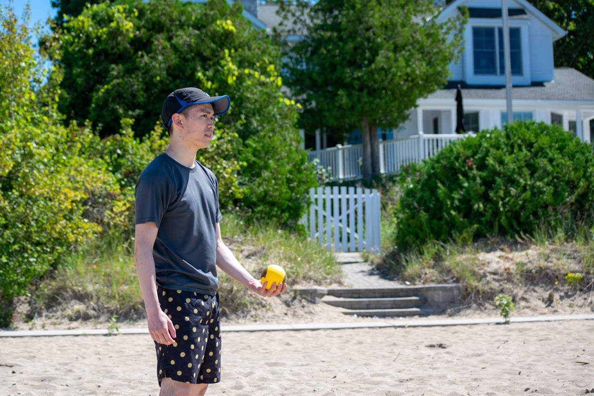

Hi, welcome to my online portfolio! My name is Kevin An and I'm a current 3B Nanotechnology Engineering student at the University of Waterloo.
Here, you'll find things about me that I couldn't fit on my resume, and you can also see other things I've done (like skydiving!).
I'm currently looking for an 8-month coop position starting in January 2021 to August 2021 - if you think I'd fit well with your team, send me an email!
Experience
QA Engineer
HelloGbye
Developed an internal platform using Python, Bitbucket and Git to facilitate testing and developing of new features and algorithms
Provided recommendations for product optimization through analysis of large data sets and raw data
Prototyped software functionalities through Adobe Experience Design to demonstrate its use cases and importance
Collaborated with senior developers to drive new product ideas by analyzing its UI/UX
January 2020 - April 2020
Quality Assurance Analyst
SSIMWAVE
Conducted front/back-end tests to determine the readiness of the product through the use of Oracle VirtualBox, LXD and MySQL
Documented software bugs using TestRail and Jira to include critical information for developers to solve the problem efficiently
Provided actionable feedback to effectively on-board new hires by reviewing current on-boarding processes and documents
Created new testing procedures and test cases on local test environments to validate product performance
September 2019 - December 2019
Competitive Intelligence Student
BlackBerry
Coordinated and led a competitive insight project for a new product soft-launch using exceptional organization and time management skills
Established suggested MSRP pricing for new products by investigating its industry and market size to keep a competitive price
Delivered recommendations for the product roadmap by assessing its features to further improve the product
Developed competitive insights to support BlackBerry product, marketing and sales team through market research
Janurary 2019 - April 2019
Digital Media Intern
University of Waterloo
Analyzed and interpreted digital assets surrounding the Faculty of Engineering to provide suggestions to improve student engagement
Generated monthly reports through Google Analytics and presented findings to the Marketing and Communications team
Created and managed multiple research Engineering sites on the uWaterloo directory using WCMS, based on Drupal
Optimized and improved the process of mass data collection by determining the best algorithmic approach
Besides being a full-time student, I really enjoy playing badminton, ultimate frisbee and Spikeball! I've played competitive badminton since 2015 on my high school team, then in the UW Badminton Club in university.
I started frisbee and Spikeball in university when my friends introduced it to me, and I have been loving it since.

Original Works
Edited by Me
I am an avid video editor and I love making vlogs. I love to travel but unfortunately it is expensive so the places I've been to are limited,
but I always try to make some sort of video to remember it! I use Adobe Premiere Pro, After Effects and Photoshop for a lot of my creative work.
One of the most exciting things I've done so far was skydiving! I have always wanted to skydive but I didn't meet anyone who wanted to until I attended university.
I edited this video with the footage the camerawoman filmed on my jump down.
Hong Kong was the first time I travelled outside of North America and I went with one of my friends. It was an extremely long flight but I was able to experience a lot
familiar foods at a whole new level. The video was my first attempt at a travel vlog and it is on the longer side, but there are timestamps if you're interested!
A quick way for me to keep up my hobby of video editing is creating short parodies of pre-existing videos, such as The Office opening. This idea actually came to me
when I saw a similar edit on Instagram for the Toronto Raptors and I thought this would be a funny video to showcase my friends.
Created by Me
Web design has always been one of my interests ever since I created a WordPress site for my high school project. After my first coop with the Faculty of Engineering at UW,
I was able to work on many projects for clients and school-related projects. I created a new personal portfolio (this site!) to showcase myself and my skills.
This website was built using a Bootstrap template that I personalized and tweaked.
Below are some examples of my work!
Personal Portfolio
September 2020. Built using a Bootstrap template, this was my first attempt at a fully coded website.
Previously, I had a site on WordPress but I wanted more flexibility and a personalized design.
November 2019. Built using WordPress, this website is intended to advertise the business. I worked with the client to plan,
create and maintain the website and its contents.
October 2019. Built using WordPress, this site is intended to showcase our design team. My team and I created mock-ups for the redesign,
photographed images and updated the website.